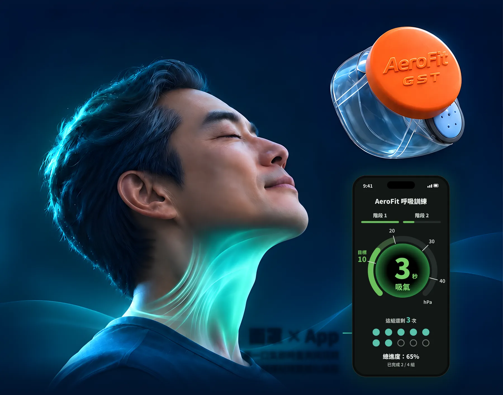
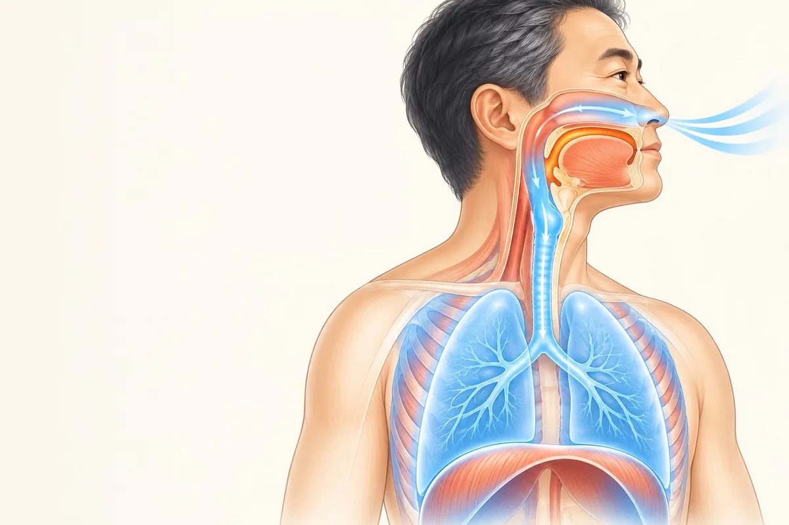
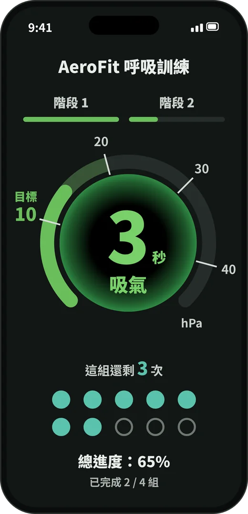
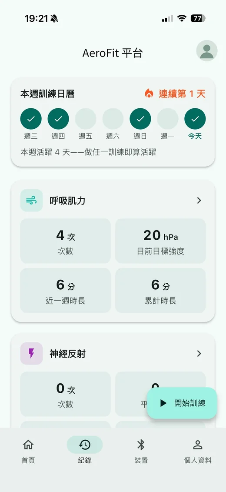

重塑上呼吸道肌群敏捷度
從被動支撐到主動肌力訓練與量化評估

認識舌咽喉呼吸肌群
舌咽喉呼吸肌肉，
撐住每一口呼吸
舌頭與咽喉的肌肉撐開呼吸道，也參與呼吸、吞嚥與發聲；胸腔與橫膈的呼吸肌，決定每一口氣的力量。這些肌肉和手腳的肌肉一樣，可以透過規律的訓練來鍛鍊。

呼吸肌耐力
呼吸也靠肌肉。規律的吸氣阻力訓練，用來鍛鍊呼吸肌力與耐力——跑步、騎車、唱歌、說話，每一口氣都用得到。
肌肉可以練。有效的肌肉訓練，有三個關鍵：
- 1適當阻力依個人能力，循序漸進
- 2規律練習天天練、持之以恆
- 3正確方式閉唇、鼻吸、舌正位
面罩 × App
把訓練原理，
變成每天 10 分鐘的居家訓練
吸氣阻力訓練
閉嘴、用鼻子對抗面罩阻力吸氣，依個人能力設定目標、循序漸進。
App 即時回饋
吸氣力道即時顯示為壓力數值與曲線；每次訓練自動記錄，進步看得見。
閉唇鼻吸＋舌正位
訓練中練習正確的呼吸與舌頭位置，把好習慣帶進日常。
反應力練習
聽到提示音就快速吸氣，練習肌肉的啟動速度。


- 1面罩輕輕貼住口鼻
- 2閉上嘴，用鼻子吸氣
- 3看著 App 的即時壓力，調整出力
- 4每一次訓練，App 自動記錄
白天清醒時訓練・每天約 10 分鐘
訓練機制
讓每一次吸氣，
成為有回饋的協同訓練
以負壓作為練習負荷，結合即時數據回饋，練習上、下呼吸道肌群的協調控制。
-
肌群協同
協調咽喉擴張肌與吸氣肌群，練習維持設定的面罩負壓。
舌肌・軟顎與咽壁・吸氣肌群 -
感覺回饋
氣道感覺訊號與螢幕壓力曲線，提供每次吸氣的調整線索。
-
中樞調節
依照目標與回饋調整出力，透過反覆練習探索動作學習。
設定目標 → 觀察壓力 → 調整出力 → 重複練習
訓練 × 回饋 × 量化評估
圖示為訓練機制概念；長期神經適應及睡眠呼吸效益仍需臨床驗證。
生理背景參考：J Physiol. 2000；PMID 11251050
影片
一分鐘看懂 AeroFit
AeroFit 是什麼、怎麼用。
研發與研究
從產學研發，到臨床研究
成大產學合作
與成大產學合作，完成訓練方法與產品設計。
北醫研究合作
與臺北醫學大學研究團隊合作，進行更完整、嚴謹的臨床研究。
世界睡眠醫學會
研究成果獲選於 World Sleep 2025 世界睡眠醫學會年會（新加坡）發表。
SPARK Asia Showcase
成大 SPARK 計畫培育團隊，獲選 2026 SPARK Asia Showcase。
台灣原創技術
5項發明專利
保護核心技術
- 吸氣阻力訓練
- 一分鐘呼吸能力檢測
- 反應力訓練
- 上呼吸道阻力偵測
- 舌咽喉訓練與感測裝置
並布局中國、德國、美國及 PCT 國際專利。
跨領域專業團隊，共同研發
- 胸腔・睡眠醫學專科醫師
- 物理治療肌肉訓練設計
- 工業設計生醫工程
使用須知
本產品屬自主呼吸訓練輔助工具，無任何醫療診斷、治療或預防疾病之功能。產品利用氣壓感測器記錄吸氣時的壓力，並以通氣孔與單向閥在吸氣時提供氣流阻力，讓使用者透過深層吸氣練習，訓練呼吸肌肉群。
- 使用時機：清醒時的呼吸運動訓練。
- 適用 18 歲以上成人。
- 注意：心血管疾病、哮喘或呼吸道異常者不宜使用。